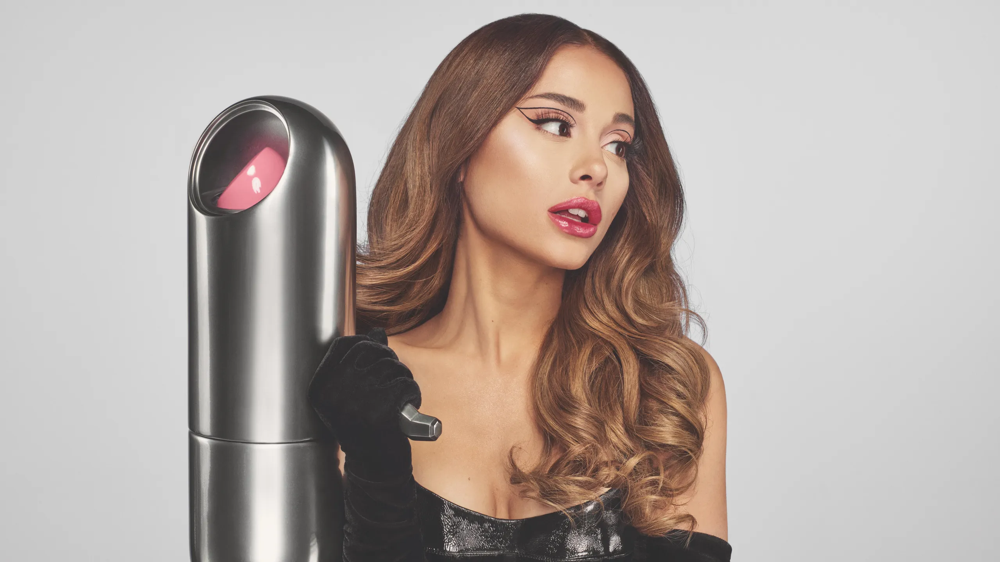
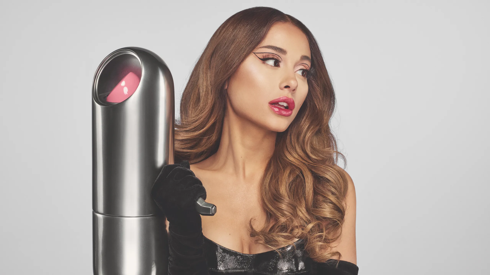

Career: Life on Stage and Behind the Camera
Ariana Grande’s Career began on Broadway, where she captured the attention of many with her role in 13 the Musical. Soon after, Grande’s breakout television role as Cat Valentine on Nickelodeon’s Victorious and Sam & Cat showcased her comedic talent and strong presence in the entertainment industry. Her journey to stardom then progressed as she transitioned into music, becoming a global pop sensation best known for her vocals and ability to blend genres. With hit albums like Dangerous Woman, Sweetener, and Positions, she captivated millions with her ability to effortlessly mix pop, R&B, and trap. Recently, Grande has returned to her theatrical roots, taking on the highly anticipated role of Glinda in the Wicked movie adaptation, further cementing her place in both the music and acting worlds. Whether performing in front of thousands or behind the scenes in a studio, Grande has consistently proven herself to be a versatile artist in the entertainment industry.
Beauty by Ariana: Fragrance & r.e.m. beauty
Ariana Grande’s creative vision extends beyond music, with successful ventures in the beauty and fragrance industries. Her fragrance line has become a fan favorite, with signature scents like Ari, Cloud, and Thank U, Next capturing her personal style—sweet, playful, and elegant. In addition, Ariana’s r.e.m. beauty line, launched in 2021, reflects her commitment to self-expression and inclusivity. With its dreamy aesthetic and continuous product releases, r.e.m. beauty has quickly earned a reputation for its high-quality formulations, from buildable foundations to hydrating lip glosses. Through both her fragrance and beauty lines, Ariana continues to inspire her fans to embrace their individuality, adding her personal touch to the ever-evolving beauty world.
Discography
- Yours Truly (2013)
- My Everything (2014)
- Dangerous Woman (2016)
- Sweetener (2018)
- Thank U, Next (2019)
- Positions (2020)
- Eternal Sunshine (2024)
Ariana’s Acting Career: Movies and TV Shows
- Victorious (2010–2013) – Role: Cat Valentine
- Sam & Cat (2013–2014) – Role: Cat Valentine
- Scream Queens (2015) – Role: Chanel #2
- Wicked (2024) - Role: Glinda
Gallery
 
